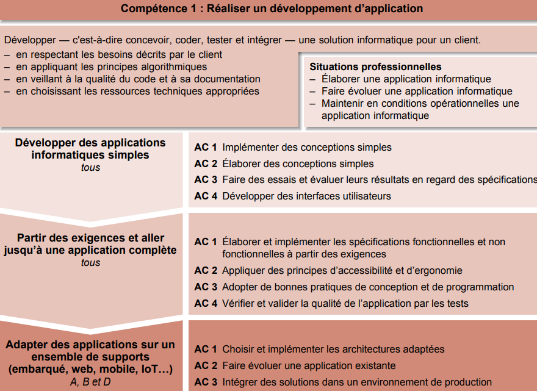

– Élaborer une application informatique
– Faire évoluer une application informatique
– Maintenir en conditions opérationnelles une
application informatique
Apprentissage critique de la Competence

Evaluation
| Ressource | R1 Initiation au développement | R2 Développement d'interface web | R10 Anglais technique |
| Coefficient | 42 | 12 | 6 |
SAE 1 Implémentation d'un besoin client.
Le développement d’application consiste à recueillir les besoins des clients, analyser ces besoins, concevoir et réaliser une implémentation répondant au cahier des charges, dans des contextes qui peuvent être spécialisés en fonction de domaines métiers (gestion, finance, santé, jeux vidéos,…) ou des plateformes de développement spécifiques (web, mobile, desktop, Internet des objets (IoT)…). Le développeur peut accéder à des métiers plus spécialisés : développement web, développement mobile, développement frontend, développement fullstack, développement backend, architecte logiciel, lead developer, DevOps. Le développement doit suivre l’état de l’art en matière de processus qualité, de sécurité et d’efficacité (temps de calcul, green computing), ce qui nécessite le développement de compétences variées. Les équipes de développement pouvant être de taille conséquente, il est nécessaire d’être formé aux diverses techniques de travail en équipe usuelles dans le domaine.
Ressources
R1
Initiation au développement
– Élaborer une application informatique
– Faire évoluer une application informatique
– Maintenir en conditions opérationnelles une
application informatique
Descriptif détaillé
Objectif L'objectif de cette ressource est l'initiation au développement. Cette ressource est nécessaire pour la réalisation d'un développement d'application et l'optimisation des applications informatiques. Savoir de référence étudiés: Algorithmes fondamentaux (structures simples, recherche d'un élément, parcours, tri…), Algorithmes sur les structures de données (itératifs et/ou récursifs), Manipulation de listes, tableaux, collections dynamiques, statiques (accès direct ou séquentiels), piles, files, structures, Types abstraits de données simples : première approche de l'encapsulation, Notions de modularité, Premières notions de qualité (par ex. : nommage, assertions, documentation, sûreté de fonctionnement, jeu d'essais, performance…), Lecture/écriture de fichiers Prolongements suggérés Introduction à la gestion de versions.
R2
Développement d’interfaces web
- Faire des essais et évaluer leurs résultats en regard des
spécifications
-Développer des interfaces utilisateurs
Liste des composantes essentielles
Descriptif détaillé
Objectif L'objectif de cette ressource est d'apprendre les techniques de création de documents numériques sur le web en réponse à des besoins client. Cette ressource est une base pour réaliser un développement d'application tout en appréhendant les besoins du client et de l'utilisateur. Savoir de référence étudiés Spécifications d'interfaces utilisateur, maquettage (sketch, scénarios, persona…), Technologies d'affichage du Web (par ex. : Hypertext Markup Language (HTML), Cascading Style Sheet (CSS)…), Test de la conformité des sites Web aux standards d'accessibilité World Wide Web Consortium (W3C) / Web, Accessibility Initiative (WAI) Prolongements suggérés Génération de documents numériques
R10
Anglais
- Faire des essais et évaluer leurs résultats en regard des
spécifications
-Développer des interfaces utilisateurs
Descriptif détaillé
Objectif L'objectif de cette ressource est d'introduire l'anglais de spécialité informatique et de développer sa culture générale et scientifique. Cette ressource permet l'acquisition du vocabulaire de base de l'informatique. Savoir de référence étudiés Vocabulaire de base de l'informatique et de la bureautique, Initiation aux techniques de présentation orale, Compréhension des ressources à l'écrit et à l'oral (par ex. : documentations, tutoriels, documents scientifiques d'actualité…), Les différents savoirs de référence pourront être approfondis